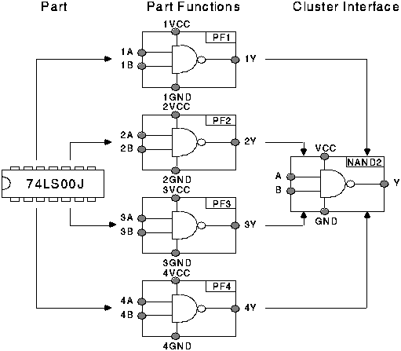
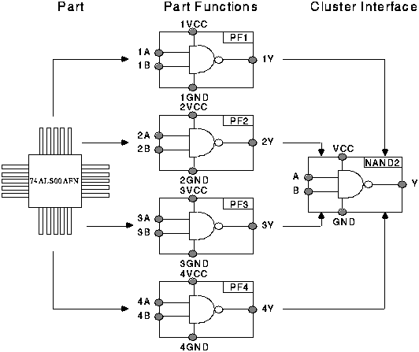

This chapter describes the concept of parts. Part information is commonly stored in "component libraries" within CAD systems. In EDIF, the term "component" is reserved for an instance of a part. The model for part can be found in the pcb_part_model schema. A part is the set of information which describes a particular component (see section 23.1). This information will change infrequently and is used for the design of many boards. Previously, this information was entered into a CAD system part library from data sheets provided by the manufacturer. A part can be an electrical_part, a connector_part, a mechanical_part or a jumper_part.
An electrical_part describes a component which contains some electrical functionality. It is further divided into several categories. A packaged_electrical_part is the set of information which describes a pre-fabricated electrical component and it specifies the package by which this part is packaged. A die_electrical_part is the set of information which describes an unpackaged die component and it specifies the die_physical_template that this part uses. A printed_electrical_part is the set of information which describes a printed electrical component fabricated as part of the bare board. A fully_defined_electrical_part is an electrical_part with a well defined electrical functionality, in terms of part_functions. Each part_function describes a unit of electrical functionality which is defined by referring to a cluster. A minimally_defined_electrical_part is an electrical_part whose functionality is not specified within an EDIF file. This may be the case when the manufacturer does not wish to provide information about the internal functionality of a part. Alternatively, a fully_defined_electrical_part may be provided to support CAD systems or tools which make use of gate-permutability information.
Figure 19.1 shows an example of an electrical_part named 74LS00J. This part is a fully_defined_electrical_part which contains four part_functions. Each part_function is an instance of a 2-Input Positive NAND Gate. This part is packaged by the J14 package (as shown in figure 16.1); hence it is also a packaged_electrical_part.
Figure 19.2 shows the model of electrical_part.
An electrical_part has a number of electrical_part_terminals. Each electrical_part_terminal defines a connection point into or out of an electrical_part. It is divided into several categories depending on the type of the electrical_part. A packaged_electrical_part_terminal is a terminal of a packaged_electrical_part; a die_electrical_part_terminal is a terminal of a die_electrical_part; a printed_electrical_part_terminal is a terminal of a printed_electrical_part; a fully_defined_electrical_part_terminal is a terminal of a fully_defined_electrical_part and a minimally_defined_electrical_part_terminal is a terminal of a minimally_defined_electrical_part. A fully_defined_electrical_part_terminal maps a terminal of a fully_defined_electrical_part onto zero, one or more terminals of the part_functions within the fully_defined_electrical_part. A packaged_electrical_part_terminal maps a terminal of a packaged_electrical_part onto a package_terminal of the package referenced by the packaged_electrical_part. A die_electrical_part_terminal maps a terminal of a die_electrical_part onto an electrical_bond_pad of the die_physical_template referenced by the die_electrical_part. Figure 19.3 shows the model of electrical_part_terminal
In figure 19.1, the 74LS00J has 14 electrical_part_terminals. Since the 74LS00J part is a fully_defined_electrical_part and also a packaged_electrical_part, each terminal of the 74LS00J part is a fully_defined_electrical_part_terminal and also a packaged_electrical_part_terminal. Each electrical_part_terminal effectively describes the connection between one pin of the J14 package and zero, one or more terminals of the part_functions. Figure 19.4 shows how the package pins and part_function_terminals for part 74LS00J are connected. Each connection represents an electrical_part_terminal. The connections C7 and C14 are an example of a shared pin (into multiple part function terminals).

Figure 19.5 shows an example of an electrical part which has some "no connect" pins. That is, a part terminal which references a package pin, but no part function terminals.

A connector_part describes a component whose only intended functionality is to form a connection. It can be either pre-fabricated or printed. An example of a packaged connector_part is a socket and an example of a printed connector_part is an edge connector. Figure 19.6 shows the model of connector_part.
A mechanical_part describes a component which is pre-fabricated and which contains no intended electrical functionality. An example of a mechanical_part is a mounting clip. Figure 19.7 shows the model of mechanical_part.
In consumer electronics, many boards are manufactured as single-sided boards. On such boards, jumper components are used to jump across existing routing (on multi-layer boards, it is possible to take the new routing to another layer through vias). These are different to discrete jumper wires. They may have designators and are auto-inserted. They carry no electronic functionality. All terminals of a jumper component are equipotential. Figure 19.8 shows the model of jumper_part.
IBIS (Input/Output Buffer Information Specification) descriptions allow the specification of input/output device characteristics through voltage/current data without the need to reveal information about the internal circuitry of the part. An IBIS description can be considered to be a type of behavioural specification applicable to most digital electronic components. The current model supports electrical part, jumper part and connector part to be related to the corresponding definition within an IBIS description (see part_characteristic).